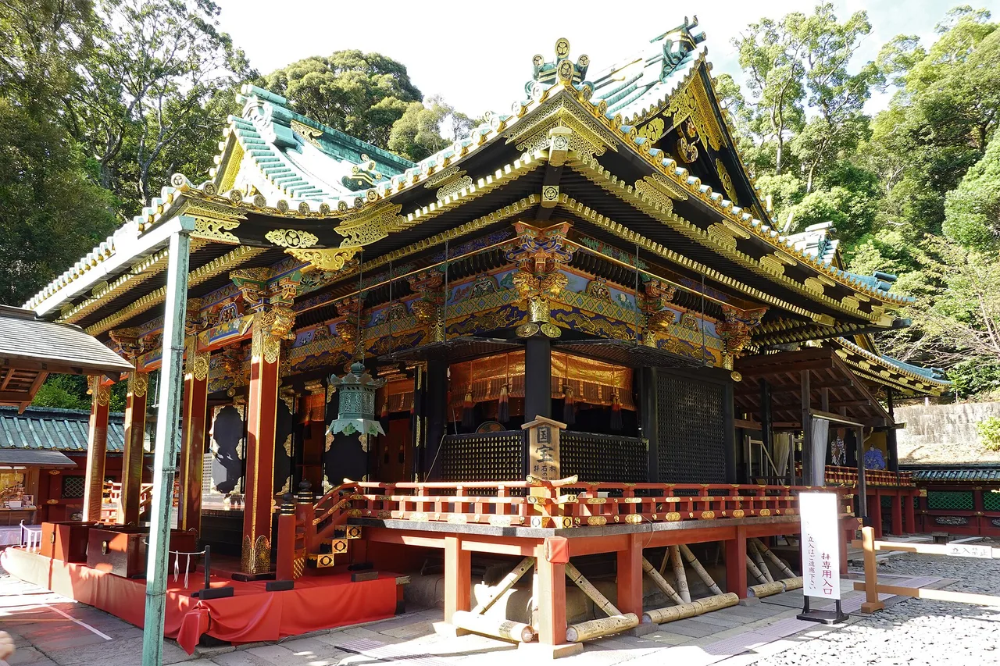

Shizuoka Travel Guide for Japanese Learners
Mount Fuji, green tea fields, and the coastal Izu Peninsula.

Shizuoka stretches along the Pacific beneath Mount Fuji. It grows most of Japan's green tea, and the Izu Peninsula is dotted with hot springs and beaches.
History & background
Shizuoka (静岡) was where Tokugawa Ieyasu spent his final years at Sunpu Castle (駿府城). Mild and sunny, its hillsides became Japan's green-tea heartland.
What to see
- Mount Fuji views and the 5th Station
- Miho-no-Matsubara pine grove
- Izu Peninsula onsen towns
- Sunpu Castle in Shizuoka City
Hidden gems
- Sengen Shrine in Fujisan City offers a serene alternative to crowded Fuji viewpoints with ancient cedar groves and peaceful walking trails.
- Omaezaki Lighthouse sits on a dramatic rocky peninsula with turquoise waters, featuring a small museum and coastal hiking paths.
- Okabe-cho Tea Village lets visitors hand-pick tea leaves seasonally and learn traditional processing methods directly from local farmers.
Some links above are affiliate links. We may earn a commission at no extra cost to you. We only list services we'd use ourselves.
What to eat
Green tea everything, plus seafood and Fuji-noodles.
Getting there & when to go
Getting there: Shizuoka City is ~1h from Tokyo by Tōkaidō Shinkansen.
Best time: Spring–early summer for tea fields; clear winter days for Fuji.
When to go — season by season
Clear winter days give postcard Mount Fuji views; tea fields are greenest in spring and early summer. The Izu (伊豆) coast is warm enough for shoulder-season beaches.
Local culture
Shizuoka's tea culture runs deep—locals often greet guests with freshly brewed green tea, and small tea houses (chaya) dot rural villages where you can watch artisans dry and roll leaves by hand. The region's tea identity shapes everything from local sweets to restaurant menus.
Fishing remains central to coastal life here. You'll notice seaside restaurants proudly display their catch daily, and many serve shirasu (whitebait) freshly caught that morning. Local fishermen still use traditional methods in certain areas, and festivals celebrate the seasonal abundance of each fish species.
A suggested visit
View Fuji from Miho-no-Matsubara (三保松原), tour a tea plantation near Shizuoka City, then unwind in an Izu Peninsula onsen town such as Atami (熱海) or Shuzenji (修善寺).
Seasonal tip: Visit tea-picking regions in late April to early May for the first flush (shincha) harvest season—prices spike after May, and fields become less photogenic once picked.
Local etiquette: When visiting Miho-no-Matsubara, stay on designated paths to protect the ancient pine grove's delicate root system and prevent soil erosion that threatens this UNESCO site.
The Izu Peninsula is a relaxed onsen escape that's easy to pair with a Fuji view.
Some links above are affiliate links. We may earn a commission at no extra cost to you. We only list services we'd use ourselves.
Common questions
Q. How do I get to Shizuoka from Tokyo?
A. The Tōkaidō Shinkansen reaches Shizuoka City in about 1 hour from Tokyo. Book a reserved seat in advance during peak seasons (spring and winter) to guarantee a window seat for Mount Fuji views.
Q. What's the best time to visit Shizuoka?
A. Spring through early summer showcases the brilliant green tea fields in full growth. However, winter offers the clearest Mount Fuji views on crisp, cloudless days—ideal for photography at the 5th Station.
Q. Why is green tea so important here?
A. Shizuoka grows most of Japan's green tea. Beyond drinking it, try green tea noodles, ice cream, and tempura—the leaf's umami elevates everyday dishes throughout the region's restaurants.